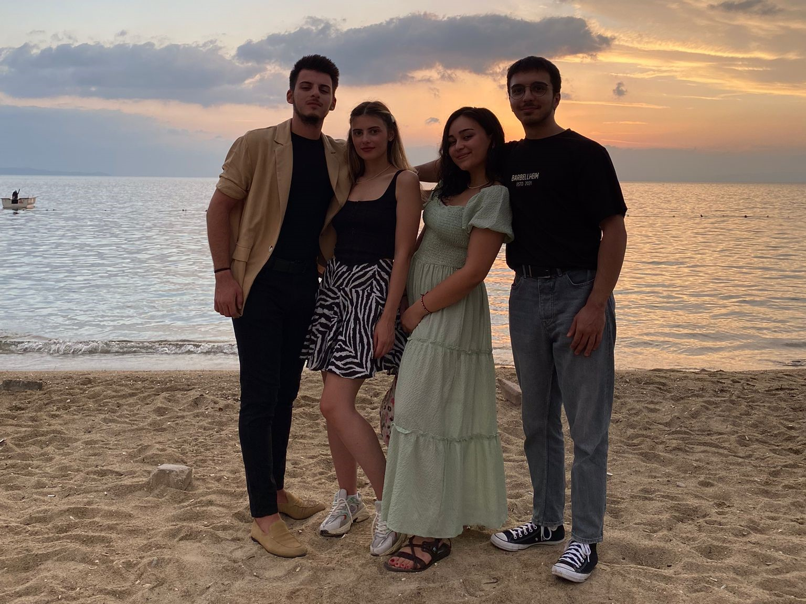

Merhabalar, ben Eren Şatır. Sizlere güzeller güzeli kız arkadaşım Ilgın Günaydın ile birlikte yaptığımız seyahatlerden ve tatillerden bahsedeceğim.
İnsan genel olarak bir yere ulaşmak adına yola çıkıyor. Ancak hayatta öyle bir yol varmış ki; yalnızca o yolda yürümek sizin hayatınızın amacı oluyor.
İşte bu yolculuğumuzda sizinle paylaşacağım yerler genel olarak ikimizin de çok sevdiği ada yerleşimlerinden oluşacak.
Birinci Durağımız: AVŞA

Balıkesir'e bağlı Avşa Adasına ilk gidişimdi. Ilgın'ın üniversitedeki arkadaş grubuyla birlikte gittik. Onlarla ilk kez orada tanıştım.
Yukarıda görmüş olduğunuz üç güzel insan soldan sağa sayacak olursam; Meriç,Betül,Ilgın ve Alihan.
İnsanlarla tanışmadan beklentimi minimum tutarım ki hayal kırıklıkları az olsun. Ama bu insanları o kadar sevdim ki Avşa hakkında size anlatabileceğim şeyler maalesef ki (sizin için) yalnızca onlar hakkında olur.
Onları tanımaktan aldığım keyiften dolayı adayı keşfedecek çok fırsatım olmadı. Adanın lunaparkına gittik, küçük ama renkli bir yerdi. Ilgınla her zaman olduğu gibi basket potasında tüm zamanımızı geçirdik. (Alihan performansından dolayı bir küçük azar yemiş olabilir Ilgından)
Bir akşam denize nazır bir restorantda rakımızı içtikten sonra gece denize atlamamız da unutulamayacak anılar içersinde. Hatta bizden sonra başka çiftler de denize girdi.
Ama hayatım boyunca unutamayacağım an; denizdeyken yağmurun yağmasıyla tüm plaj boşaldığında yalnızca bizim denizde çocuklar gibi keyifle vakit geçirmeye devam etmesiydi.
Bu tatilde hayatıma dahil olan Alihan Ayaz'a hem varlığı hem de bu eğitimimde bana rehberlik ettiği için teşekkür etmek istiyorum. Kendisinin github linkini de
buraya bırakıyorum.